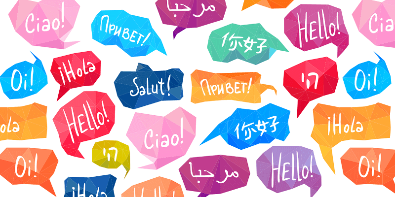

Project Idea
Overview
The overall idea that created the initial concept of our project, is that, with the diverse world that is our Earth, conversation between different cultures can be seen as incredibly difficult to approach. While many non-English cultures typically learn a minimum of one language, any native-English speakers have difficulty learning any other languages, typically due to a lack of education. While this app is by no means a substitute for the training that others go through to speak select dialects, it certainly is an immediate alternative if an individual user of our products requires assistance when it comes to understanding the phrases of different cultures. To give you an example, lets assume that our average consumer would be a foreigner, whether it be someone travelling for leisure or business opportunities, but are unable to understand the native language there. They would install our app, and should be able to communicate with ease, even if they have little to no understanding of the language themselves, as the app will verbally recognize words and phrases it hears, and automatically repeat them in a language of your choice. Understanding is the key to making progress in any regard, and it is exceptionally hard to gain progress at any point if you lack understanding due to a lack of a skill or trait that much of the western world considers unique but is often the exemplar for the rest. The aim of our product is to create easy understanding of another’s words and cultures, and we can only hope it lives up to that expectation.
Motivation
With the development of economic globalization, language barriers have become the biggest obstacle. The emergence of automatic translation software can just solve this problem. Compared with human translators, automatic translation has faster speed and smaller size, which means that everyone can download automatic translation software on their mobile phones, and Get the information you want in a short time. In addition, it is difficult for a human translator to perform real-time translation, which is expensive and difficult to achieve, but it is not difficult for automatic translation software. Moreover, it can also be improved. Through the training and optimization of automatic translation software, this will effectively improve the accuracy of automatic translation. For today's social development, with the development of technology, automatic translation will significantly improve quality and productivity in the future. Today's automatic translation market demand is increasing. For example, the travel and online shopping industries are investing heavily in automatic translation software, because consumers need correctly translated and optimized content so that consumers can have a pleasant shopping experience. Automatic translation also enables retailers to reach and attract more consumers, thereby reaping economic benefits. However, most of the automatic translation software so far cannot accurately translate the content that users want. This may be due to grammatical or machine errors that analyze the contextual connection. This also means that there is still a large market in this field. And development space. Therefore, after analyzing and discussing the feasibility of the project, our team chose to position the automatic translation as our project goal.

Description
Automatic Translation is a state-of-the-art auto translation app that allow users to translate in real time with multiple languages available. The app is designed to be technologically advanced and help make correct translations Because the vocabulary of some languages differs, features such as text translation in various settings and automatic grammar correction are available. Automatic Translation includes a speech to text feature that takes accent and pronunciations into account when translating. This can only be accomplished because Automatic Translation will do speech coding which deals with deal with the special characteristics of sound signals. Behind all of this is the master of Website creation tools which include Java, c++ and Python. One common issue around the world is that the elderly has issues with the use of technology. With most elderly in foreign countries knowing only native language, Genesis hopes to make this app easy for the elderly so they can communicate easily.

Tools and Technologies
There are multiple tools and technologies needed to complete this project. The foundation of text translation can be realized through the connection interface. The translation interface we use is the translation interface API provided by Youdao Cloud, Tencent and Google. We use a neural machine translation system to improve the fluency and accuracy of software translation. To build the database, we need to use My SQL. We use the OPUS (Open Parallel Corpus) website to browse and download all their parallel sentence data, which gives us nearly 85 million translated sentence pairs, making it easier to build our database Artificial intelligence technology is widely used in our projects. For example, natural language processing techniques can address word boundary definition, word sense disambiguation, syntactic fuzziness, and defective or non-standard input. We will also launch our software for mobile, so we need to use App Inventor. App Inventor consists of a Component Designer for designing the user interface and a block editor for writing programs. We realized graphical interface based on Java language and used Java-SWT framework to quickly generate custom graphical interface. In addition, we also want to realize the realization of reading pictures and recognizing the text in the pictures to translate with one click, so we can use the text recognition JAR from Tencent AI open platform. Combined with other natural language processing technologies such as machine translation and speech synthesis, speech recognition technology can build more complex applications, such as speech-to-speech translation. So that we can recognize speech and then translate it.
Skills Required
Automatic translation is very important for the current diversified earth, and there are still many people in various countries who do not speak the languages of other countries. As a result, many people don't dare to come into contact with people outside their own country, because language is a difficult problem for a person to overcome. Therefore, based on this starting point, the purpose of our project has come out. We have two different operating modes. One is the online operating mode, which means that we will make a website as a translator, like Google translation, so we have to master website creation tools such as JS, HTML, CSS, and At the same time, we have data analysis for other languages. Another is our app mode, that is, we have to make a software that can be saved on a mobile phone or computer, such as Youdao translation, so we have to master Java or C++ or Python, etc. One programming language is used as the underlying logic, and then some other tasks in other app production are used to make a complete app. Of course, it must also have data analysis for other languages.
Reflection
This time, everyone completed the task very quickly and helped each other. But we still need to start work as early as possible. This task made me feel the speed of teamwork and the sense of belonging when working together. This made me understand that the power of one person is not enough after all, but when you work in a team, then your teammates will provide you with tremendous support.